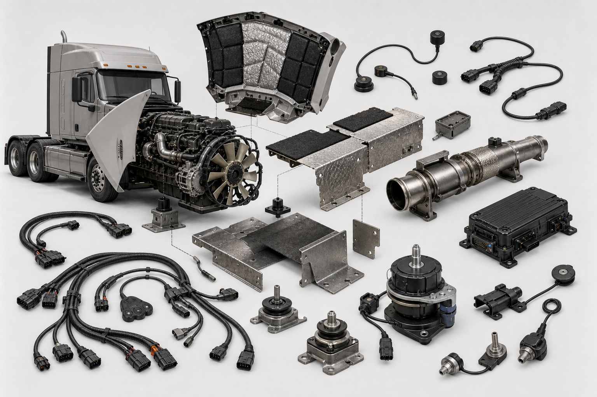
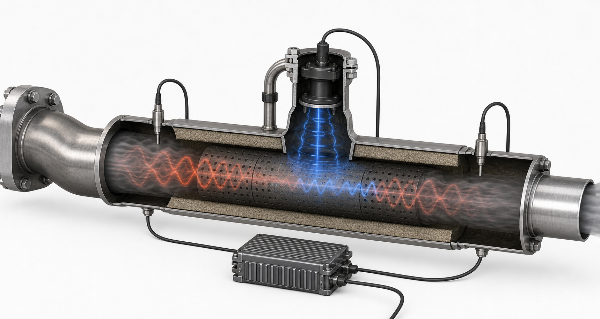

Whole-Vehicle Acoustic Map
Source-path-receiver layout for the main noise-control zones.
Active acoustic retrofit
A layered design for heavy trucks: reduce exhaust boom, counter engine vibration before it reaches the frame, and use predictive DSP to target the tonal engine orders that make diesel trucks feel loud from blocks away.
System strategy
Earbuds cancel sound near the ear. A truck needs cancellation near the source, where the waveform is still predictable. The strongest retrofit combines active exhaust control, active vibration mounts, engine-bay acoustic treatment, and a controller that follows engine RPM.
Inject anti-noise into the pipe to reduce combustion pulses before they radiate from the tailpipe.
Counter engine shake so less structure-borne vibration reaches the frame, cab, and body panels.
Use passive absorbers and small emitters to soften engine-bay radiation during idle and low speed.
Track tachometer pulses, microphone signals, and accelerometers to adapt in real time.

Technical drawings
The system is not one giant speaker. It is a set of smaller devices placed where the noise is still organized: inside the exhaust path, between the engine and frame, and inside the engine bay.
Source-path-receiver layout for the main noise-control zones.
Reference mic hears pulses early; side-branch driver injects the inverse wave.
Counter-force reduces vibration transmitted into the chassis.
The loudest tones often track RPM, so the controller predicts them.
Adaptive filters update until the error microphone signal drops.

Best first subsystem
Outdoor cancellation fails when sound spreads everywhere. Exhaust ANC is different: the pipe is a waveguide. That lets the controller sense pressure upstream, emit an inverse wave downstream, and verify the residual before sound exits the tailpipe.
High-temperature pressure microphones or protected tubes capture the pulse pattern before the outlet.
A rugged acoustic driver injects pressure into the pipe without blocking exhaust flow.
A downstream sensor measures leftover boom and lets the adaptive filter tune itself.
The science
A truck motor creates periodic combustion pulses, rotating imbalance, gear mesh, fan noise, turbo whistle, and broadband clatter. Active control is strongest on the periodic low-frequency content. Passive materials still matter for higher frequencies.
Use these to size and tune the first prototype.
Example: at 900 RPM, a 6-cylinder four-stroke diesel has strong combustion content near 45 Hz and its harmonics. A 45 Hz wave is roughly 7.6 meters long in air, which is why low rumble travels far and why source-side control is so valuable.
Where active control helps
Prototype roadmap
The first prototype should target idle, low-speed acceleration, and depot noise. Those are painful, repeatable, and easier to validate than highway tire noise.
Record pass-by, tailpipe, engine-bay, frame, and cab vibration across idle, rev, and launch events.
Install protected mics, a side-branch acoustic driver, controller, and downstream validation sensor.
Use accelerometers and commanded counter-force to reduce frame-borne vibration at engine orders.
Separate hot exhaust gas, electronics, wiring, and microphones with heat shields and serviceable pods.
Compare A-weighted and low-frequency pass-by levels, plus nearby bedroom-like indoor recordings.
Product wedge
Best early targets: refuse trucks, delivery trucks, port drayage trucks, refrigerated fleets, construction vehicles near residential zones, and truck depots with nighttime operations.